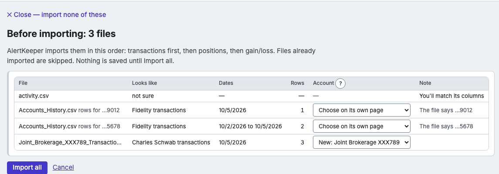

Getting started
- Your AlertKeeper mailbox — a Gmail of its own, an app password, a test letter.
- Free services to start with — ARK's trade notifications and Zacks.
- Letters you already get elsewhere — forward them by sender: Gmail · Outlook.com · Apple iCloud Mail · Yahoo Mail.
- Your broker's files: Schwab · Fidelity.
- Every week: import. Download the three files since your last import — transactions, positions and realized gain/loss; Import says, for each account, the day the next transactions download starts. Pick them all on Import broker files (the button on Positions and Trades), look inside, and press Import all. Files already imported are skipped.

A picture of Import with three files picked, made-up data. - Accounts.
- Backups and restore — done by itself each night; restoring takes a few clicks.
- Prices — where prices come from, and why to leave AlertKeeper open in the evening.

Replacing or deleting the app keeps your data -- in ~/Library/Application Support/AlertKeeper on a Mac, in %LOCALAPPDATA%\AlertKeeper on Windows, where the uninstaller asks whether to delete it too. To begin clean, use Settings → Start over before you uninstall.
ARK Invest and Zacks are examples of letters AlertKeeper can read, not services we suggest or endorse. AlertKeeper recommends no service.